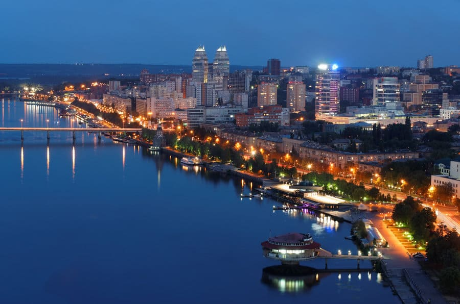
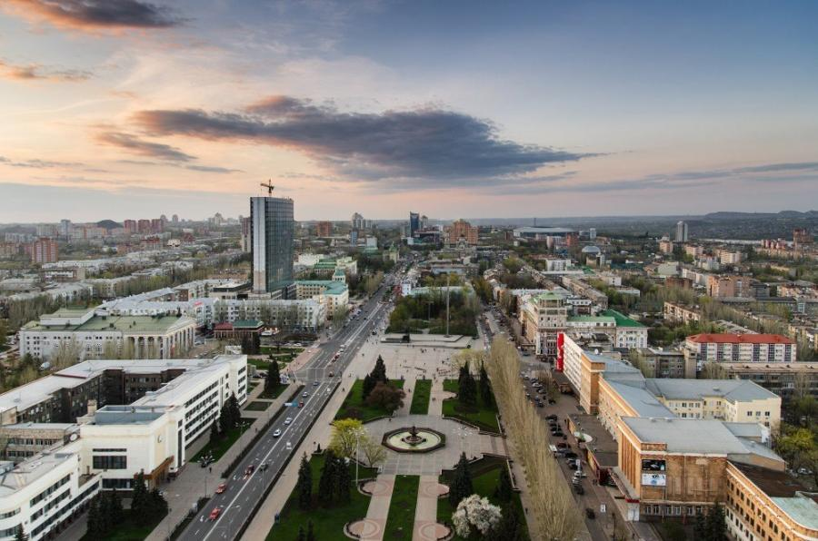
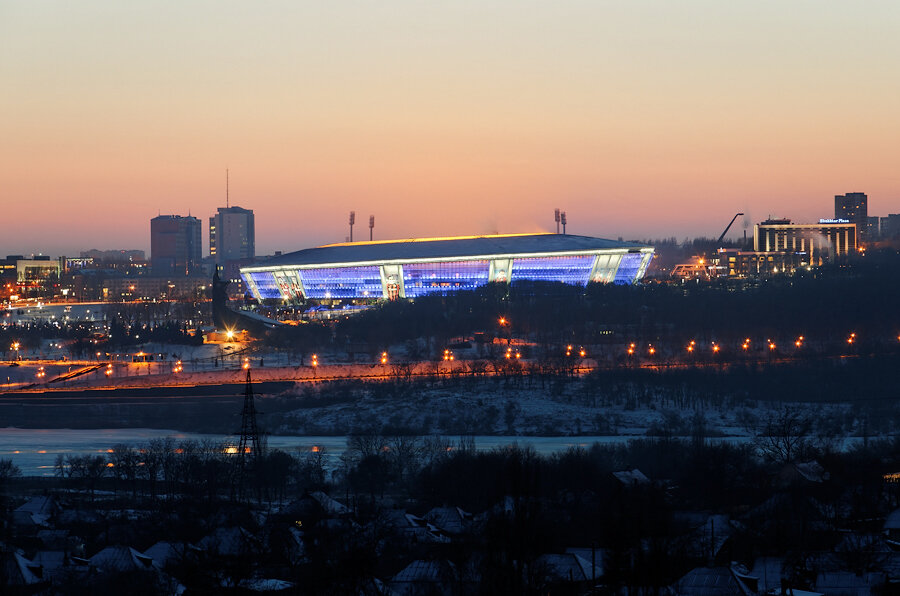
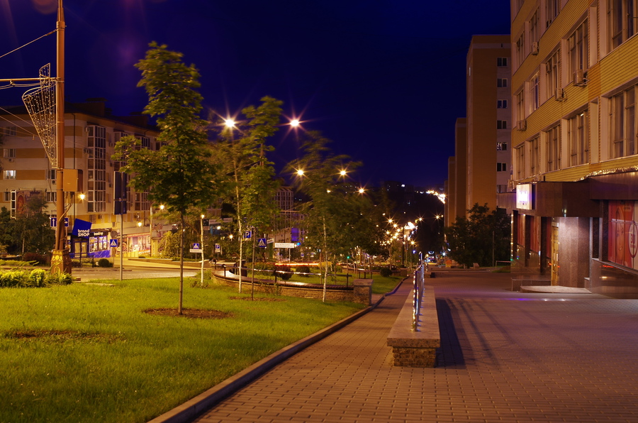
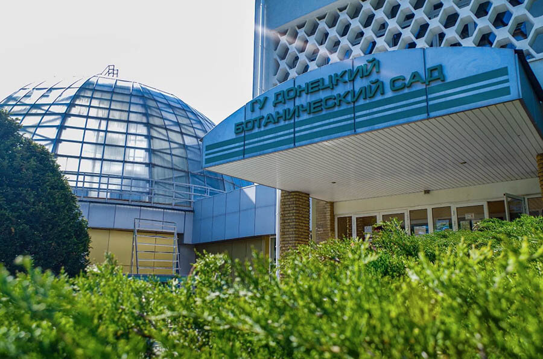
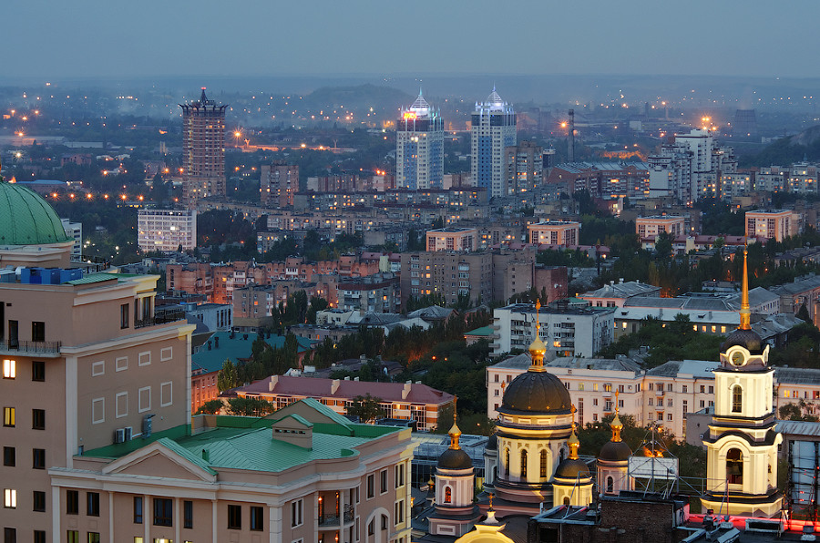

Город Донецк
Донецк — уникальный город, прошедший путь от небольшого заводского поселка до крупного промышленного и культурного центра. Это не просто столица Донецкой Народной Республики, это Город-герой, город-крепость, которая так и не покорилась врагу. Здесь живут сильные духом люди, которые пекут хлеб, растят детей и куют розы из осколков снарядов.






Последние события
По городу местами строят детские игровые площадки.
В Донецке восстановили ежедневное водоснабжение благодаря помощи московской области.
В городских троллейбусах и автобусах появились терминалы для оплаты проезда.